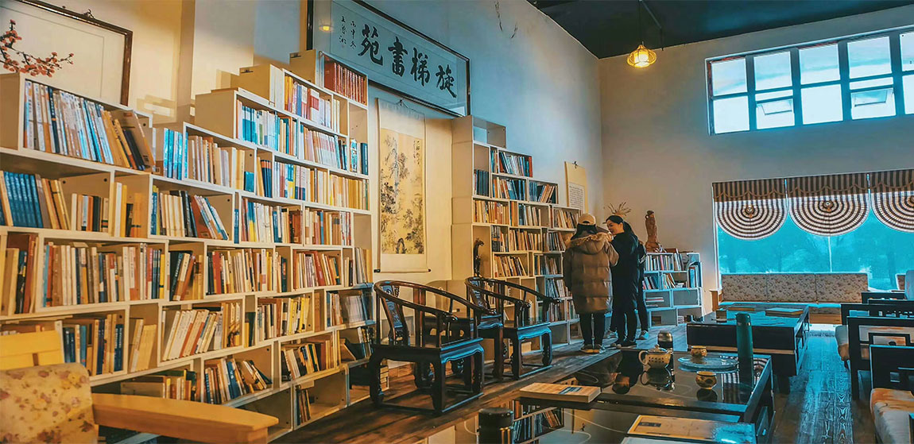
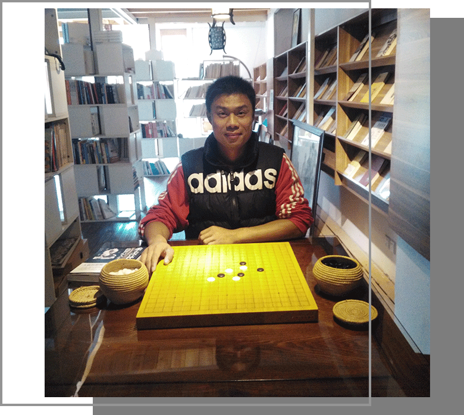
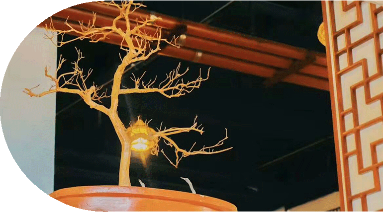
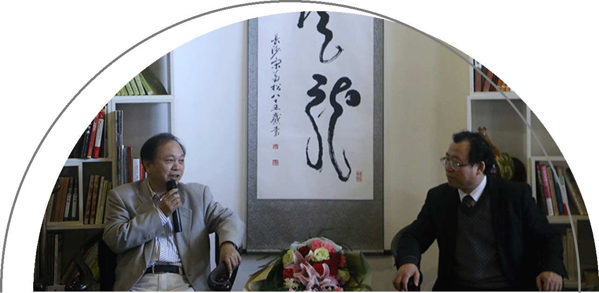
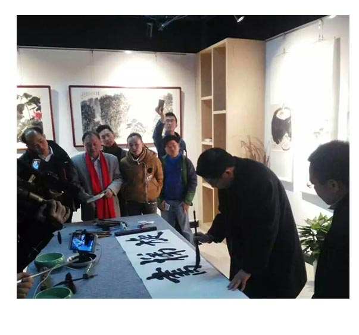

旋转书梯
事事都讲求缘分，缘分不到，遍寻也不得见， 缘分到了，自会出现在你眼前。 人如此，书如此，书店亦如此。
发现旋梯书苑，不可不谓之为书缘。 旋梯诗社是在著名诗人彭燕郊先生的亲自指导 和鼓励之下，湘潭大学学生1980年成立的。 旋梯意为：起点就是上升。

张雷
旋梯书苑CEO
2002级，中文系
出版书籍：《北苑7栋503》
张雷的父亲是一位语文老师，
他自小便喜爱读书，而大学选择中文也是遂了自己的心愿。
毕业后他在上海购得一大批好书，选择在湘大开了书苑。
“这里是我精神的源头，并且湘大的学弟学妹也需要这样一个读书的地方。”
关于书店的未来，张雷有一个很远大的想法：打造湘大的雅典学园。
他希望通过举办沙龙让老师和同学们有更多的交流。


右 ，湘潭大学副校长刘建平教授
左 ，︽ 风起 ︾作者张效雄发布会

杰出校友王鲁湘为旋梯书苑题字
旋梯与校友
与杰出校友日野正平先生
文新院书记王洁群
旋转书梯
事事都讲求缘分，缘分不到，遍寻也不得见， 缘分到了，自会出现在你眼前。 人如此，书如此，书店亦如此。
发现旋梯书苑，不可不谓之为书缘。 旋梯诗社是在著名诗人彭燕郊先生的亲自指导 和鼓励之下，湘潭大学学生1980年成立的。 旋梯意为：起点就是上升。